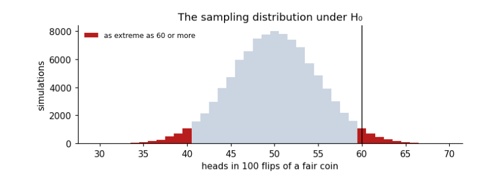
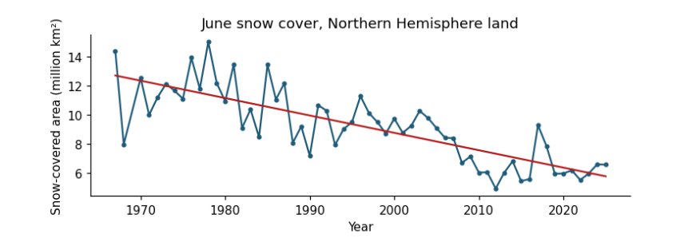

1. The ideas behind every test¶
A hypothesis test answers one narrow question: if nothing special were going on, how surprising would these data be? Every test in this guide, from a coin toss to a flood map, follows the same six steps. Learn them once and every test becomes a variation.
1.1 The six steps¶
-
State the question in words: is this coin biased? Has June snow cover declined?
-
Write the null hypothesis \(H_0\), the “nothing special” case (the coin is fair; the trend is zero), and the alternative \(H_1\) (the coin is biased; the trend is not zero).
-
Choose a test statistic: one number that summarises how far the data are from what \(H_0\) predicts, such as a \(z\)-score, a \(t\)-value or a \(\chi^2\) value.
-
Find its sampling distribution under \(H_0\): the spread of values the statistic would take if \(H_0\) were true and the data were drawn again and again. Statistical theory gives it for standard tests; a simulation gives it for anything.
-
Compute the p-value: the probability, under \(H_0\), of a statistic at least as extreme as the one observed.
-
Report and interpret: the statistic, its degrees of freedom, the p-value, an effect size and a confidence interval, and what they mean for the question.
1.2 The quantities, and how to read them¶
| Quantity | What it is and how to read it |
|---|---|
| \(H_0\), \(H_1\) | The null and alternative hypotheses. A test can reject \(H_0\) or fail to reject it; it never proves \(H_0\). |
| \(\alpha\) | The significance level, chosen before looking: the chance of rejecting a true \(H_0\) that you accept. Usually 0.05. |
| p-value | Probability, if \(H_0\) were true, of data at least as extreme as observed. Small means surprising under \(H_0\). It is not the probability that \(H_0\) is true, and not the size of an effect. |
| \(z\) | Distance from a mean in standard deviations, \(z = (x-\mu)/\sigma\). Unitless. $ |
| \(t\) | An estimate divided by its standard error, for example \(t = b/\mathrm{SE}(b)\). Unitless. Read with its degrees of freedom; with few of them, a larger $ |
| \(\chi^2\) | Sum over cells of \((O-E)^2/E\), observed against expected counts. Unitless. Grows with sample size. |
| df | Degrees of freedom: independent pieces of information left after fitting. For a straight line through \(n\) points, \(n-2\). |
| SE | Standard error: how much an estimate would vary between repeated samples. Same units as the estimate. |
| CI | Confidence interval: a range that, in 95% of repeated samples, contains the true value. Same units as the estimate. More informative than a p-value. |
| Effect size | How big the difference or relation is, separately from how certain: Cohen’s \(d\) for means, \(r\) for correlation, Cramér’s \(V\) for tables. |
| Type I error | Rejecting a true \(H_0\) (a false alarm). Its rate is \(\alpha\). |
| Type II error | Failing to reject a false \(H_0\) (a miss). Power is one minus its rate: the chance of detecting a real effect. |
| One- or two-sided | Two-sided asks “different in either direction”; one-sided asks only one direction and must be chosen before seeing the data. |
1.3 Assumptions: where tests go wrong¶
Every test assumes something about the data, and climate data break one assumption more often than any other: independence. Today’s temperature resembles yesterday’s; one flooded field implies the next. Treated as independent, such data look far more informative than they are, and p-values come out too small. The guide shows the effect and two simple remedies: counting the effective number of independent years for a trend, and thinning a map before testing it. The other common assumptions are approximate normality (for \(z\) and \(t\)), equal spread in two groups (dropped by Welch’s test) and large enough expected counts (for \(\chi^2\), at least about five per cell). Rank-based tests (Mann–Whitney, Spearman, Mann–Kendall) drop normality.
1.4 Setup¶
This notebook runs every test in the guide on real data. Short examples come first, to build intuition with numbers small enough to check by hand; then each test is applied to a real question from climate, El Niño and the monsoon, snow cover, and radar flood mapping. Every printed number is explained: what goes in, what comes out, its units, and how to read it.
Libraries: numpy (arithmetic on arrays), pandas (tables), scipy.stats (the tests themselves) and matplotlib (figures). A fixed random seed makes the simulations repeat exactly.
import urllib.request
from pathlib import Path
import numpy as np
import pandas as pd
import matplotlib.pyplot as plt
from scipy import stats
rng = np.random.default_rng(42)
plt.rcParams.update({"figure.dpi": 110, "axes.spines.top": False, "axes.spines.right": False})
DATA = Path("data"); DATA.mkdir(exist_ok=True)
SOURCES = {
"hadcrut5.csv": "https://www.metoffice.gov.uk/hadobs/hadcrut5/data/HadCRUT.5.0.2.0/analysis/diagnostics/"
"HadCRUT.5.0.2.0.analysis.summary_series.global.annual.csv",
"oni.data": "https://psl.noaa.gov/data/correlation/oni.data",
"indiamon.data": "https://psl.noaa.gov/data/correlation/indiamon.data",
"nh_snow.txt": "https://climate.rutgers.edu/snowcover/files/moncov.nhland.txt",
# a small table made for this guide from the radar manual's Sentinel-1 export (see data_local/SOURCE.txt)
"sindh_sar_1km.csv": "https://raw.githubusercontent.com/AhmadAmmar/AhmadAmmar.github.io/main/guides/hypothesis-testing/notebooks/data_local/sindh_sar_1km.csv",
}
LOCAL = Path("data_local") # present when the notebook runs inside the guide's own folder
for name, url in SOURCES.items():
if not (DATA / name).exists() and (LOCAL / name).exists():
(DATA / name).write_bytes((LOCAL / name).read_bytes())
if not (DATA / name).exists():
req = urllib.request.Request(url, headers={"User-Agent": "hypothesis-notebook/1.0"})
(DATA / name).write_bytes(urllib.request.urlopen(req, timeout=120).read())
print(f"{name:14s} {(DATA / name).stat().st_size / 1e3:8.1f} kB")
def read_psl(path):
"""NOAA PSL index files: one row per year, twelve monthly values; -99.9 and -999.9 mean missing."""
rows = []
for line in Path(path).read_text().splitlines():
parts = line.split()
if len(parts) == 13 and parts[0].isdigit():
rows.append([int(parts[0])] + [float(v) for v in parts[1:]])
t = pd.DataFrame(rows, columns=["year", *range(1, 13)]).set_index("year")
return t.mask(t <= -99)
hadcrut5.csv 7.0 kB
oni.data 6.7 kB
indiamon.data 3.5 kB
nh_snow.txt 13.3 kB
sindh_sar_1km.csv 755.1 kB
1.5 A coin and a p-value¶
Every hypothesis test has the same shape. A null hypothesis (H₀) says "nothing special is going on". A test statistic summarises the data in one number. Under H₀ that number has a known spread of values, its sampling distribution. The p-value is the probability, if H₀ were true, of a statistic at least as extreme as the one observed. A small p means the data would be surprising if H₀ were true.
Short example: a coin gives 60 heads in 100 flips. H₀: the coin is fair, P(heads) = 0.5. Statistic: the number of heads. We find the p-value three ways: by simulating 100,000 fair coins, exactly from the binomial distribution, and with the normal approximation (a z-score).
heads, n = 60, 100
sims = rng.binomial(n, 0.5, size=100_000)
p_sim = np.mean(np.abs(sims - 50) >= abs(heads - 50)) # two-sided: as far from 50 in either direction
p_exact = stats.binomtest(heads, n, 0.5).pvalue
z = (heads - n * 0.5) / np.sqrt(n * 0.5 * 0.5) # (observed - expected) / standard deviation
p_z = 2 * stats.norm.sf(abs(z))
z_cc = (abs(heads - n * 0.5) - 0.5) / np.sqrt(n * 0.5 * 0.5) # continuity correction: counts are whole numbers
p_cc = 2 * stats.norm.sf(z_cc)
print(f"simulation p = {p_sim:.4f} exact binomial p = {p_exact:.4f}")
print(f"normal approximation: z = {z:.2f}, p = {p_z:.4f}; with continuity correction z = {z_cc:.2f}, p = {p_cc:.4f}")
fig, ax = plt.subplots(figsize=(7, 2.8))
ax.hist(sims, bins=np.arange(30, 71) - 0.5, color="#cbd5e1")
ax.hist(sims[np.abs(sims - 50) >= 10], bins=np.arange(30, 71) - 0.5, color="#b91c1c", label="as extreme as 60 or more")
ax.axvline(60, color="k", lw=1)
ax.set(xlabel="heads in 100 flips of a fair coin", ylabel="simulations", title="The sampling distribution under H₀")
ax.legend(frameon=False, fontsize=8); plt.tight_layout(); plt.show()
simulation p = 0.0571 exact binomial p = 0.0569
normal approximation: z = 2.00, p = 0.0455; with continuity correction z = 1.90, p = 0.0574

Reading it: the grey histogram is what a fair coin produces; the red tails are results at least as far from 50 as 60 is. Their share, about 0.057, is the p-value. With the usual threshold α = 0.05, 0.057 is just above it, so we would not reject H₀: 60 heads is a little unusual but not convincing evidence of a biased coin. The simulation and the exact binomial agree. The plain normal approximation gives 0.046, which would wrongly fall below 0.05: it treats the count of heads as continuous, while it can only be a whole number. The continuity correction subtracts half a count from the distance to the expected value, and brings the approximation back to 0.057. Approximations are convenient; when an exact test is available, use it, especially with small counts.
Two warnings that apply to every test below. A p-value is not the probability that H₀ is true, and a large p-value does not show H₀ is true; it only says the data are not surprising under H₀. And a tiny p-value says nothing about how big or important an effect is: for that we need an effect size and a confidence interval.
2. One value, and a trend¶
Two of the most common questions asked of climate data are whether a single value is unusual, and whether a series has a trend. The \(z\)-test answers the first when the spread is known. The \(t\)-test answers the second, and its degrees of freedom show why a trend from few, or dependent, years deserves caution.
2.1 The z-test: is one value unusual?¶
The z-score measures how many standard deviations (σ) a value lies from a mean (μ): z = (x − μ) / σ. If values are normally distributed, about 95% fall within z = ±1.96, and the two-sided p-value is 2 × P(Z > z).
Short example, by hand: a class has a mean exam mark of 60 with σ = 10. A mark of 78 gives z = (78 − 60)/10 = 1.8, and p = 2 × 0.036 = 0.072.
Real example: how unusual was 2024's global temperature compared with the climate of 1961–1990?
g = pd.read_csv(DATA / "hadcrut5.csv").rename(columns={"Time": "year", "Anomaly (deg C)": "anom"})[["year", "anom"]]
g = g[g.year <= 2024]
base = g[g.year.between(1961, 1990)].anom
mu, sigma = base.mean(), base.std(ddof=1)
x = g.loc[g.year == 2024, "anom"].iloc[0]
z = (x - mu) / sigma
print(f"1961-1990: mean μ = {mu:.3f} °C, standard deviation σ = {sigma:.3f} °C (n = {len(base)})")
print(f"2024: x = {x:.3f} °C -> z = ({x:.3f} - {mu:.3f}) / {sigma:.3f} = {z:.1f}")
print(f"two-sided p = {2 * stats.norm.sf(abs(z)):.1e}")
print(f"by hand, the class example: z = 1.8, p = {2 * stats.norm.sf(1.8):.3f}")
1961-1990: mean μ = 0.008 °C, standard deviation σ = 0.170 °C (n = 30)
2024: x = 1.181 °C -> z = (1.181 - 0.008) / 0.170 = 6.9
two-sided p = 5.5e-12
by hand, the class example: z = 1.8, p = 0.072
2024 lies about 7 standard deviations above the 1961–1990 mean, and the p-value is about 5 × 10⁻¹². Under the climate of 1961–1990, a year this warm would essentially never happen. Units: z has none (it is a count of σ); μ, σ and x are in °C. Caveat: the z-test assumes the reference years are independent draws from a normal distribution with a stable mean; here the 1961–1990 years already contain a little trend, which makes σ slightly larger and the test slightly conservative.
2.2 The t-test for a trend¶
A trend's slope b is estimated from data, so it has a standard error SE(b). The t-statistic is t = b / SE(b): how many standard errors the slope is from zero. Under H₀ (no trend) it follows a t distribution with degrees of freedom df = n − 2 (n points, minus the two numbers fitted: slope and intercept). Degrees of freedom count the independent pieces of information left after fitting; fewer means wider tails and larger p-values.
Short example, by hand: five years with slope b = 0.02 °C/yr and SE = 0.008 give t = 2.5, df = 3, and p = 0.088: with so few points, even t = 2.5 is not strong evidence.
print(f"by hand: t = 0.02 / 0.008 = 2.5, df = 3, two-sided p = {2 * stats.t.sf(2.5, 3):.3f}")
w = g[g.year.between(1983, 2024)]
fit = stats.linregress(w.year, w.anom)
t_naive = fit.slope / fit.stderr
resid = w.anom - (fit.intercept + fit.slope * w.year)
r1 = np.corrcoef(resid[:-1], resid[1:])[0, 1]
n = len(w); n_eff = n * (1 - r1) / (1 + r1)
se_eff = fit.stderr * np.sqrt((n - 2) / (n_eff - 2))
t_eff = fit.slope / se_eff
print(f"global 1983-2024: b = {fit.slope * 10:.3f} °C/decade, SE = {fit.stderr * 10:.3f}, t = {t_naive:.1f}, df = {n - 2}, p = {fit.pvalue:.1e}")
print(f"lag-1 autocorrelation r1 = {r1:.2f} -> effective n = {n_eff:.1f}; corrected SE = {se_eff * 10:.3f}, t = {t_eff:.1f}, "
f"df = {n_eff - 2:.1f}, p = {2 * stats.t.sf(t_eff, n_eff - 2):.1e}")
ci = fit.slope * 10 + np.array([-1, 1]) * stats.t.ppf(0.975, n_eff - 2) * se_eff * 10
print(f"95% confidence interval for the trend: {ci[0]:.3f} to {ci[1]:.3f} °C per decade")
by hand: t = 0.02 / 0.008 = 2.5, df = 3, two-sided p = 0.088
global 1983-2024: b = 0.216 °C/decade, SE = 0.013, t = 16.8, df = 40, p = 1.1e-19
lag-1 autocorrelation r1 = 0.22 -> effective n = 27.0; corrected SE = 0.016, t = 13.3, df = 25.0, p = 8.0e-13
95% confidence interval for the trend: 0.182 to 0.249 °C per decade
Reading it: the slope is about 0.22 °C per decade; t is about 17 (13 after allowing for autocorrelation) and p is tiny, so a zero trend is ruled out. The confidence interval is the more useful output: we are 95% confident the true trend lies between about 0.18 and 0.25 °C per decade. Allowing for autocorrelation (neighbouring years are alike, r₁ ≈ 0.2) reduces the 42 years to about 27 independent ones and widens the interval, but here it changes nothing important. With weaker trends or stronger autocorrelation it can turn a "significant" result into an insignificant one.
3. Two groups, and a relation¶
El Niño warms the central Pacific every few years and shifts rainfall around the tropics. Here we test whether it weakens the Indian summer monsoon: first by comparing El Niño years with La Niña years, then by measuring how closely the two series move together.
3.1 Two groups: does El Niño weaken the monsoon?¶
Question: is monsoon rainfall in central India lower in El Niño years than in La Niña years? Inputs: for each year 1950–1999, the June–September (JJAS) total of NOAA PSL's Central Indian precipitation index, and the JJAS mean of the Oceanic Niño Index (ONI, °C anomaly of Pacific sea surface temperature). An El Niño year has ONI ≥ +0.5 °C, a La Niña year ≤ −0.5 °C. We express rainfall as a percentage of its mean so the units are easy to read.
oni = read_psl(DATA / "oni.data")
rain = read_psl(DATA / "indiamon.data")
jjas = [6, 7, 8, 9]
m = pd.DataFrame({"oni": oni[jjas].mean(axis=1), "rain": rain[jjas].sum(axis=1, min_count=4)}).dropna()
m["rain_pct"] = 100 * m.rain / m.rain.mean()
m["phase"] = np.where(m.oni >= 0.5, "El Niño", np.where(m.oni <= -0.5, "La Niña", "neutral"))
print(m.groupby("phase").rain_pct.agg(["count", "mean", "std"]).round(1).to_string())
el, la = m.loc[m.phase == "El Niño", "rain_pct"], m.loc[m.phase == "La Niña", "rain_pct"]
count mean std
phase
El Niño 10 86.0 13.2
La Niña 11 111.0 12.0
neutral 29 100.7 15.0
Welch's t-test compares two means without assuming the two groups have equal spread: t = (x̄₁ − x̄₂) / √(s₁²/n₁ + s₂²/n₂), with degrees of freedom from the Welch–Satterthwaite formula. The Mann–Whitney U test asks the same question using only the ranks of the values, so it does not assume normal distributions and is not swayed by one extreme year. Cohen's d is the effect size: the difference in means divided by the pooled standard deviation (about 0.2 small, 0.5 medium, 0.8 large).
welch = stats.ttest_ind(el, la, equal_var=False)
mw = stats.mannwhitneyu(el, la, alternative="two-sided")
sp = np.sqrt(((len(el) - 1) * el.var() + (len(la) - 1) * la.var()) / (len(el) + len(la) - 2))
d = (el.mean() - la.mean()) / sp
print(f"El Niño mean {el.mean():.1f}% (n={len(el)}), La Niña mean {la.mean():.1f}% (n={len(la)}), difference {el.mean() - la.mean():.1f} points")
print(f"Welch t = {welch.statistic:.2f}, df = {welch.df:.1f}, p = {welch.pvalue:.4f}")
print(f"Mann-Whitney U = {mw.statistic:.0f}, p = {mw.pvalue:.4f}")
print(f"Cohen's d = {d:.2f}")
ci = welch.confidence_interval(0.95)
print(f"95% confidence interval for the difference: {ci.low:.1f} to {ci.high:.1f} percentage points")
fig, ax = plt.subplots(figsize=(6.5, 3))
for i, ph in enumerate(["La Niña", "neutral", "El Niño"]):
v = m.loc[m.phase == ph, "rain_pct"]
ax.scatter(np.full(len(v), i) + rng.uniform(-0.12, 0.12, len(v)), v, s=18, color=["#1f5c7a", "0.6", "#b91c1c"][i])
ax.hlines(v.mean(), i - 0.25, i + 0.25, color="k")
ax.set_xticks([0, 1, 2], ["La Niña", "neutral", "El Niño"])
ax.set(ylabel="JJAS rainfall (% of mean)", title="Central India monsoon rainfall by ENSO phase, 1950–1999")
plt.tight_layout(); plt.show()
El Niño mean 86.0% (n=10), La Niña mean 111.0% (n=11), difference -25.0 points
Welch t = -4.53, df = 18.3, p = 0.0003
Mann-Whitney U = 10, p = 0.0017
Cohen's d = -1.99
95% confidence interval for the difference: -36.6 to -13.4 percentage points

Reading it: each dot is one year; the black bars are group means. El Niño years average well below La Niña years. The t-test and the rank test agree, the effect size is large, and the confidence interval for the difference excludes zero. Limits: only 1950–1999 and one regional index; the relationship between ENSO and the monsoon is known to vary between decades, and other influences (the Indian Ocean Dipole) are not included.
3.2 Correlation: how strongly do they move together?¶
Pearson's r measures linear association, from −1 to +1. To test H₀: r = 0, use t = r√(n − 2)/√(1 − r²) with df = n − 2. Spearman's ρ is Pearson's r computed on ranks, so it captures any steady (monotonic) relation and resists outliers. r² is the share of variance in one variable that a straight line on the other explains.
r, p = stats.pearsonr(m.oni, m.rain_pct)
n = len(m)
t_r = r * np.sqrt(n - 2) / np.sqrt(1 - r ** 2)
rho, p_rho = stats.spearmanr(m.oni, m.rain_pct)
print(f"Pearson r = {r:.2f}, n = {n}, t = {r:.2f} x sqrt({n - 2}) / sqrt(1 - {r:.2f}^2) = {t_r:.2f}, df = {n - 2}, p = {p:.1e}")
print(f"r squared = {r ** 2:.2f}: ONI accounts for {r ** 2:.0%} of the year-to-year variance in this index")
print(f"Spearman rho = {rho:.2f}, p = {p_rho:.1e}")
b = np.polyfit(m.oni, m.rain_pct, 1)
print(f"slope: {b[0]:.1f} percentage points of rainfall per +1 °C of ONI")
Pearson r = -0.43, n = 50, t = -0.43 x sqrt(48) / sqrt(1 - -0.43^2) = -3.26, df = 48, p = 2.0e-03
r squared = 0.18: ONI accounts for 18% of the year-to-year variance in this index
Spearman rho = -0.36, p = 1.0e-02
slope: -10.2 percentage points of rainfall per +1 °C of ONI
The correlation is negative (warmer central Pacific, drier central India), moderate in size (r ≈ −0.43) and significant (p ≈ 0.002), but ONI explains only about a fifth of the variation (r² ≈ 0.18). The two-group comparison above looked stronger because it compared only the extremes, El Niño against La Niña, leaving out the 29 neutral years. Correlation does not by itself show cause; here the physical mechanism (El Niño shifts rising air over the Pacific and suppresses convection over India) is what makes the result meaningful.
4. Snow trends and flood counts¶
Snow and floods bring two more kinds of data: a series that need not be normally distributed, which suits a rank-based trend test, and a map of categories, which suits a test on counts.
4.1 A trend test for snow¶
Question: has June snow cover over Northern Hemisphere land declined since 1967? Data: Rutgers University Global Snow Lab, monthly snow-covered area in km². We test the trend two ways. The OLS t-test for the slope (as above) assumes normal, independent residuals. The Mann–Kendall test only asks whether later years tend to be lower than earlier ones: it counts concordant and discordant pairs, which is Kendall's τ between year and value. It needs no normality and is common for hydrological and snow series.
s = pd.read_csv(DATA / "nh_snow.txt", sep=r"\s+", header=None, names=["year", "month", "km2"])
june = s[(s.month == 6) & s.year.between(1967, 2025)].copy()
june["mkm2"] = june.km2 / 1e6
fit = stats.linregress(june.year, june.mkm2)
tau, p_mk = stats.kendalltau(june.year, june.mkm2)
resid = june.mkm2 - (fit.intercept + fit.slope * june.year)
r1 = np.corrcoef(resid[:-1], resid[1:])[0, 1]
print(f"June snow cover, {june.year.min()}-{june.year.max()}, n = {len(june)}")
print(f"OLS slope = {fit.slope * 10:.2f} million km² per decade, t = {fit.slope / fit.stderr:.1f}, p = {fit.pvalue:.1e}")
print(f"Mann-Kendall (Kendall tau with year) tau = {tau:.2f}, p = {p_mk:.1e}")
print(f"residual lag-1 autocorrelation r1 = {r1:.2f}")
first, last = june.mkm2.iloc[:10].mean(), june.mkm2.iloc[-10:].mean()
print(f"first ten years mean {first:.1f}, last ten years {last:.1f} million km² ({100 * (last / first - 1):.0f}%)")
fig, ax = plt.subplots(figsize=(7, 2.8))
ax.plot(june.year, june.mkm2, "o-", ms=3, color="#1f5c7a")
ax.plot(june.year, fit.intercept + fit.slope * june.year, color="#b91c1c")
ax.set(xlabel="Year", ylabel="Snow-covered area (million km²)", title="June snow cover, Northern Hemisphere land")
plt.tight_layout(); plt.show()
June snow cover, 1967-2025, n = 58
OLS slope = -1.19 million km² per decade, t = -9.9, p = 7.1e-14
Mann-Kendall (Kendall tau with year) tau = -0.61, p = 1.9e-11
residual lag-1 autocorrelation r1 = 0.06
first ten years mean 11.6, last ten years 6.5 million km² (-44%)

Both tests reject "no trend" decisively: τ is strongly negative (most later years are lower than most earlier ones) and the slope is about −1.2 million km² per decade, a 44% fall between the first and last ten years. The residuals are barely autocorrelated (r₁ ≈ 0.06), so the ordinary t-test needs no correction here; always check before assuming. τ is unitless; the slope is in million km² per decade.
4.2 Chi-square on a radar flood map¶
The chi-square (χ²) test of independence asks whether two categorical variables are related. Observed counts O in a table are compared with the counts E expected if the variables were independent (row total × column total / grand total): χ² = Σ (O − E)² / E, with df = (rows − 1)(columns − 1). Cramér's V (0 to 1) is the effect size.
Question: in Sindh in September 2022, were radar-dark (likely flooded) 1 km cells more common where water had been seen before? Data: mean Sentinel-1 VV backscatter in 2022 (dark means below −14.1 dB, the threshold used in the radar manual) and the JRC Global Surface Water occurrence (any water seen since 1984, occurrence > 0).
sar = pd.read_csv(DATA / "sindh_sar_1km.csv")
sar["dark_2022"] = sar.vv_2022_db < -14.1
sar["water_before"] = sar.water_occurrence_pct > 0
obs = pd.crosstab(sar.water_before, sar.dark_2022)
chi2, p, dof, exp = stats.chi2_contingency(obs, correction=False)
V = np.sqrt(chi2 / (obs.values.sum() * (min(obs.shape) - 1)))
print("observed counts (rows: water seen before; columns: dark in 2022)")
print(obs.to_string())
print("\nexpected counts if independent")
print(pd.DataFrame(exp.round(0), index=obs.index, columns=obs.columns).to_string())
print(f"\nchi-square = {chi2:.0f}, df = {dof}, p = {p:.1e}, Cramér's V = {V:.2f}")
observed counts (rows: water seen before; columns: dark in 2022)
dark_2022 False True
water_before
False 10002 594
True 6200 3484
expected counts if independent
dark_2022 False True
water_before
False 8465.0 2131.0
True 7737.0 1947.0
chi-square = 2905, df = 1, p = 0.0e+00, Cramér's V = 0.38
Cells where water had been seen before were dark far more often than independence predicts, and p is vanishingly small. But this test assumes every cell is an independent observation. Neighbouring cells of a flood are not independent: one flooded field implies the next. With n = 20,280 the test is far too confident. One simple check is to thin the grid, keeping only cells about 10 km apart, and test again.
thin = sar[(((sar.x_utm42n - sar.x_utm42n.min()) / 1000).round() % 10 == 0) & (((sar.y_utm42n - sar.y_utm42n.min()) / 1000).round() % 10 == 0)]
obs_t = pd.crosstab(thin.water_before, thin.dark_2022)
chi2_t, p_t, dof_t, _ = stats.chi2_contingency(obs_t, correction=False)
V_t = np.sqrt(chi2_t / (obs_t.values.sum() * (min(obs_t.shape) - 1)))
print(f"thinned to {len(thin)} cells about 10 km apart: chi-square = {chi2_t:.1f}, df = {dof_t}, p = {p_t:.1e}, Cramér's V = {V_t:.2f}")
thinned to 208 cells about 10 km apart: chi-square = 28.0, df = 1, p = 1.2e-07, Cramér's V = 0.37
With 1% of the cells, χ² falls roughly in proportion to n, but Cramér's V stays about the same: the strength of the association does not depend on how many cells we count, while the p-value does. This is the general lesson: with very large n, almost everything is "significant", so report the effect size and think about how many independent observations you really have.
5. Many tests, and how to report them¶
5.1 Many tests at once: false discoveries¶
When a map is made by testing every pixel, some pixels will be "significant" by chance. With α = 0.05, about 5% of pixels with no real change pass the test. The Benjamini–Hochberg procedure controls the false discovery rate (FDR): among the results called significant, the expected share that are false is kept below a chosen q (say 5%). Simulation: 1,000 pixels, of which 900 have no trend and 100 a real one.
n_null, n_real, years = 900, 100, np.arange(30)
pvals, truth = [], []
for i in range(n_null + n_real):
slope = 0.0 if i < n_null else 0.04
y = slope * years + rng.normal(0, 0.3, len(years))
pvals.append(stats.linregress(years, y).pvalue); truth.append(i >= n_null)
pvals, truth = np.array(pvals), np.array(truth)
raw = pvals < 0.05
bh = stats.false_discovery_control(pvals, method="bh") < 0.05
for name, call in [("p < 0.05 for each pixel", raw), ("Benjamini-Hochberg, q = 0.05", bh)]:
tp, fp = (call & truth).sum(), (call & ~truth).sum()
print(f"{name:30s} called significant {call.sum():4d}: real {tp:3d}, false {fp:3d}, share false {fp / max(call.sum(), 1):.0%}")
p < 0.05 for each pixel called significant 128: real 100, false 28, share false 22%
Benjamini-Hochberg, q = 0.05 called significant 105: real 100, false 5, share false 5%
Testing each pixel at 0.05 calls 28 no-change pixels significant, so more than a fifth of the "changes" are false. Benjamini–Hochberg keeps the share of false discoveries near 5%. Here it still finds all 100 real trends because they are strong; with weaker real effects it would miss some, which is the price of controlling false discoveries. On a real map with millions of pixels, this is the difference between a map of change and a map of noise.
5.2 Reading any test result¶
Every test reported in a paper should come with the same set of facts. This table collects the ones used above.
summary = pd.DataFrame([
["z-test", "Is one value unusual?", "a value, a mean, a known SD", "z = (x − μ)/σ", "none", "unitless (number of SDs)"],
["t-test for a slope", "Is there a trend?", "pairs (time, value)", "t = b / SE(b)", "n − 2 (fewer if autocorrelated)", "b in units of y per unit time"],
["Welch t-test", "Do two means differ?", "two samples", "t = (x̄₁ − x̄₂)/√(s₁²/n₁ + s₂²/n₂)", "Welch–Satterthwaite", "difference in units of y"],
["Mann–Whitney U", "Does one group tend to be larger?", "two samples", "U from ranks", "none", "U is a count of pairs"],
["Pearson r test", "Are two variables linearly related?", "pairs (x, y)", "t = r√(n−2)/√(1−r²)", "n − 2", "r unitless, −1 to 1"],
["Mann–Kendall", "Is there a monotonic trend?", "a time series", "Kendall τ of value with time", "none", "τ unitless, −1 to 1"],
["Chi-square", "Are two categories related?", "a table of counts", "χ² = Σ(O − E)²/E", "(rows − 1)(cols − 1)", "χ² unitless; Cramér's V 0 to 1"],
["Benjamini–Hochberg", "Which of many tests to believe?", "many p-values", "ranked p ≤ (k/m)·q", "none", "adjusted p-values"],
], columns=["test", "question", "inputs", "statistic", "degrees of freedom", "units"])
print(summary.to_string(index=False))
test question inputs statistic degrees of freedom units
z-test Is one value unusual? a value, a mean, a known SD z = (x − μ)/σ none unitless (number of SDs)
t-test for a slope Is there a trend? pairs (time, value) t = b / SE(b) n − 2 (fewer if autocorrelated) b in units of y per unit time
Welch t-test Do two means differ? two samples t = (x̄₁ − x̄₂)/√(s₁²/n₁ + s₂²/n₂) Welch–Satterthwaite difference in units of y
Mann–Whitney U Does one group tend to be larger? two samples U from ranks none U is a count of pairs
Pearson r test Are two variables linearly related? pairs (x, y) t = r√(n−2)/√(1−r²) n − 2 r unitless, −1 to 1
Mann–Kendall Is there a monotonic trend? a time series Kendall τ of value with time none τ unitless, −1 to 1
Chi-square Are two categories related? a table of counts χ² = Σ(O − E)²/E (rows − 1)(cols − 1) χ² unitless; Cramér's V 0 to 1
Benjamini–Hochberg Which of many tests to believe? many p-values ranked p ≤ (k/m)·q none adjusted p-values
5.3 A checklist for reporting a test¶
-
The question and the null hypothesis, in words.
-
The data: what, where, when, how many observations, and how many of them are independent.
-
The test, and why its assumptions hold, or how they were relaxed.
-
The statistic with its degrees of freedom, for example \(t(25.0) = 13.3\).
-
The p-value as a number, not only “\(p<0.05\)”.
-
An effect size and a confidence interval, in the units of the data.
-
If many tests were run, how false discoveries were controlled.
-
What the result means for the question, and what it does not show.